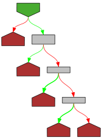

// Copyright 2010 The Go Authors. All rights reserved.
// Use of this source code is governed by a BSD-style
// license that can be found in the LICENSE file.
package fmt
import (
"errors"
"io"
"math"
"os"
"reflect"
"strconv"
"sync"
"unicode/utf8"
)
// ScanState represents the scanner state passed to custom scanners.
// Scanners may do rune-at-a-time scanning or ask the ScanState
// to discover the next space-delimited token.
type ScanState interface {
// ReadRune reads the next rune (Unicode code point) from the input.
// If invoked during Scanln, Fscanln, or Sscanln, ReadRune() will
// return EOF after returning the first '\n' or when reading beyond
// the specified width.
ReadRune() (r rune, size int, err error)
// UnreadRune causes the next call to ReadRune to return the same rune.
UnreadRune() error
// SkipSpace skips space in the input. Newlines are treated appropriately
// for the operation being performed; see the package documentation
// for more information.
SkipSpace()
// Token skips space in the input if skipSpace is true, then returns the
// run of Unicode code points c satisfying f(c). If f is nil,
// !unicode.IsSpace(c) is used; that is, the token will hold non-space
// characters. Newlines are treated appropriately for the operation being
// performed; see the package documentation for more information.
// The returned slice points to shared data that may be overwritten
// by the next call to Token, a call to a Scan function using the ScanState
// as input, or when the calling Scan method returns.
Token(skipSpace bool, f func(rune) bool) (token []byte, err error)
// Width returns the value of the width option and whether it has been set.
// The unit is Unicode code points.
Width() (wid int, ok bool)
// Because ReadRune is implemented by the interface, Read should never be
// called by the scanning routines and a valid implementation of
// ScanState may choose always to return an error from Read.
Read(buf []byte) (n int, err error)
}
// Scanner is implemented by any value that has a Scan method, which scans
// the input for the representation of a value and stores the result in the
// receiver, which must be a pointer to be useful. The Scan method is called
// for any argument to Scan, Scanf, or Scanln that implements it.
type Scanner interface {
Scan(state ScanState, verb rune) error
}
// Scan scans text read from standard input, storing successive
// space-separated values into successive arguments. Newlines count
// as space. It returns the number of items successfully scanned.
// If that is less than the number of arguments, err will report why.
|
|
func Scan(a ...any) (n int, err error) {
return Fscan(os.Stdin, a...)
}
// Scanln is similar to Scan, but stops scanning at a newline and
// after the final item there must be a newline or EOF.
|

|
func Scanln(a ...any) (n int, err error) {
return Fscanln(os.Stdin, a...)
}
// Scanf scans text read from standard input, storing successive
// space-separated values into successive arguments as determined by
// the format. It returns the number of items successfully scanned.
// If that is less than the number of arguments, err will report why.
// Newlines in the input must match newlines in the format.
// The one exception: the verb %c always scans the next rune in the
// input, even if it is a space (or tab etc.) or newline.
|

|
func Scanf(format string, a ...any) (n int, err error) {
return Fscanf(os.Stdin, format, a...)
}
type stringReader string
|

|
func (r *stringReader) Read(b []byte) (n int, err error) {
n = copy(b, *r)
*r = (*r)[n:]
if n == 0 {
err = io.EOF
}
return
}
// Sscan scans the argument string, storing successive space-separated
// values into successive arguments. Newlines count as space. It
// returns the number of items successfully scanned. If that is less
// than the number of arguments, err will report why.
|

|
func Sscan(str string, a ...any) (n int, err error) {
return Fscan((*stringReader)(&str), a...)
}
// Sscanln is similar to Sscan, but stops scanning at a newline and
// after the final item there must be a newline or EOF.
|

|
func Sscanln(str string, a ...any) (n int, err error) {
return Fscanln((*stringReader)(&str), a...)
}
// Sscanf scans the argument string, storing successive space-separated
// values into successive arguments as determined by the format. It
// returns the number of items successfully parsed.
// Newlines in the input must match newlines in the format.
|

|
func Sscanf(str string, format string, a ...any) (n int, err error) {
return Fscanf((*stringReader)(&str), format, a...)
}
// Fscan scans text read from r, storing successive space-separated
// values into successive arguments. Newlines count as space. It
// returns the number of items successfully scanned. If that is less
// than the number of arguments, err will report why.
|

|
func Fscan(r io.Reader, a ...any) (n int, err error) {
s, old := newScanState(r, true, false)
n, err = s.doScan(a)
s.free(old)
return
}
// Fscanln is similar to Fscan, but stops scanning at a newline and
// after the final item there must be a newline or EOF.
|
|
func Fscanln(r io.Reader, a ...any) (n int, err error) {
s, old := newScanState(r, false, true)
n, err = s.doScan(a)
s.free(old)
return
}
// Fscanf scans text read from r, storing successive space-separated
// values into successive arguments as determined by the format. It
// returns the number of items successfully parsed.
// Newlines in the input must match newlines in the format.
|

|
func Fscanf(r io.Reader, format string, a ...any) (n int, err error) {
s, old := newScanState(r, false, false)
n, err = s.doScanf(format, a)
s.free(old)
return
}
// scanError represents an error generated by the scanning software.
// It's used as a unique signature to identify such errors when recovering.
type scanError struct {
err error
}
const eof = -1
// ss is the internal implementation of ScanState.
type ss struct {
rs io.RuneScanner // where to read input
buf buffer // token accumulator
count int // runes consumed so far.
atEOF bool // already read EOF
ssave
}
// ssave holds the parts of ss that need to be
// saved and restored on recursive scans.
type ssave struct {
validSave bool // is or was a part of an actual ss.
nlIsEnd bool // whether newline terminates scan
nlIsSpace bool // whether newline counts as white space
argLimit int // max value of ss.count for this arg; argLimit <= limit
limit int // max value of ss.count.
maxWid int // width of this arg.
}
// The Read method is only in ScanState so that ScanState
// satisfies io.Reader. It will never be called when used as
// intended, so there is no need to make it actually work.
|

|
func (s *ss) Read(buf []byte) (n int, err error) {
return 0, errors.New("ScanState's Read should not be called. Use ReadRune")
}
|
|
func (s *ss) ReadRune() (r rune, size int, err error) {
if s.atEOF || s.count >= s.argLimit {
err = io.EOF
return
}
r, size, err = s.rs.ReadRune()
if err == nil {
s.count++
if s.nlIsEnd && r == '\n' {
s.atEOF = true
}
} else if err == io.EOF {
s.atEOF = true
}
return
}
|
|
func (s *ss) Width() (wid int, ok bool) {
if s.maxWid == hugeWid {
return 0, false
}
return s.maxWid, true
}
// The public method returns an error; this private one panics.
// If getRune reaches EOF, the return value is EOF (-1).
|

|
func (s *ss) getRune() (r rune) {
r, _, err := s.ReadRune()
if err != nil {
if err == io.EOF {
return eof
}
s.error(err)
}
return
}
// mustReadRune turns io.EOF into a panic(io.ErrUnexpectedEOF).
// It is called in cases such as string scanning where an EOF is a
// syntax error.
|
|
func (s *ss) mustReadRune() (r rune) {
r = s.getRune()
if r == eof {
s.error(io.ErrUnexpectedEOF)
}
return
}
|
|
func (s *ss) UnreadRune() error {
s.rs.UnreadRune()
s.atEOF = false
s.count--
return nil
}
|
|
func (s *ss) error(err error) {
panic(scanError{err})
}
|

|
func (s *ss) errorString(err string) {
panic(scanError{errors.New(err)})
}
|

|
func (s *ss) Token(skipSpace bool, f func(rune) bool) (tok []byte, err error) {
|
|
defer func() {
if e := recover(); e != nil {
if se, ok := e.(scanError); ok {
err = se.err
} else {
panic(e)
}
}
}()
if f == nil {
f = notSpace
}
s.buf = s.buf[:0]
tok = s.token(skipSpace, f)
return
}
// space is a copy of the unicode.White_Space ranges,
// to avoid depending on package unicode.
var space = [][2]uint16{
{0x0009, 0x000d},
{0x0020, 0x0020},
{0x0085, 0x0085},
{0x00a0, 0x00a0},
{0x1680, 0x1680},
{0x2000, 0x200a},
{0x2028, 0x2029},
{0x202f, 0x202f},
{0x205f, 0x205f},
{0x3000, 0x3000},
}
|
|
func isSpace(r rune) bool {
if r >= 1<<16 {
return false
}
rx := uint16(r)
for _, rng := range space {
if rx < rng[0] {
return false
}
if rx <= rng[1] {
return true
}
}
return false
}
// notSpace is the default scanning function used in Token.
|
|
func notSpace(r rune) bool {
return !isSpace(r)
}
// readRune is a structure to enable reading UTF-8 encoded code points
// from an io.Reader. It is used if the Reader given to the scanner does
// not already implement io.RuneScanner.
type readRune struct {
reader io.Reader
buf [utf8.UTFMax]byte // used only inside ReadRune
pending int // number of bytes in pendBuf; only >0 for bad UTF-8
pendBuf [utf8.UTFMax]byte // bytes left over
peekRune rune // if >=0 next rune; when <0 is ^(previous Rune)
}
// readByte returns the next byte from the input, which may be
// left over from a previous read if the UTF-8 was ill-formed.
|

|
func (r *readRune) readByte() (b byte, err error) {
if r.pending > 0 {
b = r.pendBuf[0]
copy(r.pendBuf[0:], r.pendBuf[1:])
r.pending--
return
}
n, err := io.ReadFull(r.reader, r.pendBuf[:1])
if n != 1 {
return 0, err
}
return r.pendBuf[0], err
}
// ReadRune returns the next UTF-8 encoded code point from the
// io.Reader inside r.
|
|
func (r *readRune) ReadRune() (rr rune, size int, err error) {
if r.peekRune >= 0 {
rr = r.peekRune
r.peekRune = ^r.peekRune
size = utf8.RuneLen(rr)
return
}
r.buf[0], err = r.readByte()
if err != nil {
return
}
if r.buf[0] < utf8.RuneSelf { // fast check for common ASCII case
rr = rune(r.buf[0])
size = 1 // Known to be 1.
// Flip the bits of the rune so it's available to UnreadRune.
r.peekRune = ^rr
return
}
var n int
for n = 1; !utf8.FullRune(r.buf[:n]); n++ {
r.buf[n], err = r.readByte()
if err != nil {
if err == io.EOF {
err = nil
break
}
return
}
}
rr, size = utf8.DecodeRune(r.buf[:n])
if size < n { // an error, save the bytes for the next read
copy(r.pendBuf[r.pending:], r.buf[size:n])
r.pending += n - size
}
// Flip the bits of the rune so it's available to UnreadRune.
r.peekRune = ^rr
return
}
|
|
func (r *readRune) UnreadRune() error {
if r.peekRune >= 0 {
return errors.New("fmt: scanning called UnreadRune with no rune available")
}
// Reverse bit flip of previously read rune to obtain valid >=0 state.
r.peekRune = ^r.peekRune
return nil
}
var ssFree = sync.Pool{
|
|
New: func() any { return new(ss) },
}
// newScanState allocates a new ss struct or grab a cached one.
|
|
func newScanState(r io.Reader, nlIsSpace, nlIsEnd bool) (s *ss, old ssave) {
s = ssFree.Get().(*ss)
if rs, ok := r.(io.RuneScanner); ok {
s.rs = rs
} else {
s.rs = &readRune{reader: r, peekRune: -1}
}
s.nlIsSpace = nlIsSpace
s.nlIsEnd = nlIsEnd
s.atEOF = false
s.limit = hugeWid
s.argLimit = hugeWid
s.maxWid = hugeWid
s.validSave = true
s.count = 0
return
}
// free saves used ss structs in ssFree; avoid an allocation per invocation.
|
|
func (s *ss) free(old ssave) {
// If it was used recursively, just restore the old state.
if old.validSave {
s.ssave = old
return
}
// Don't hold on to ss structs with large buffers.
if cap(s.buf) > 1024 {
return
}
s.buf = s.buf[:0]
s.rs = nil
ssFree.Put(s)
}
// SkipSpace provides Scan methods the ability to skip space and newline
// characters in keeping with the current scanning mode set by format strings
// and Scan/Scanln.
|
|
func (s *ss) SkipSpace() {
for {
r := s.getRune()
if r == eof {
return
}
if r == '\r' && s.peek("\n") {
continue
}
if r == '\n' {
if s.nlIsSpace {
continue
}
s.errorString("unexpected newline")
return
}
if !isSpace(r) {
s.UnreadRune()
break
}
}
}
// token returns the next space-delimited string from the input. It
// skips white space. For Scanln, it stops at newlines. For Scan,
// newlines are treated as spaces.
|
|
func (s *ss) token(skipSpace bool, f func(rune) bool) []byte {
if skipSpace {
s.SkipSpace()
}
// read until white space or newline
for {
r := s.getRune()
if r == eof {
break
}
if !f(r) {
s.UnreadRune()
break
}
s.buf.writeRune(r)
}
return s.buf
}
var complexError = errors.New("syntax error scanning complex number")
var boolError = errors.New("syntax error scanning boolean")
|

|
func indexRune(s string, r rune) int {
for i, c := range s {
if c == r {
return i
}
}
return -1
}
// consume reads the next rune in the input and reports whether it is in the ok string.
// If accept is true, it puts the character into the input token.
|
|
func (s *ss) consume(ok string, accept bool) bool {
r := s.getRune()
if r == eof {
return false
}
if indexRune(ok, r) >= 0 {
if accept {
s.buf.writeRune(r)
}
return true
}
if r != eof && accept {
s.UnreadRune()
}
return false
}
// peek reports whether the next character is in the ok string, without consuming it.
|
|
func (s *ss) peek(ok string) bool {
r := s.getRune()
if r != eof {
s.UnreadRune()
}
return indexRune(ok, r) >= 0
}
|
|
func (s *ss) notEOF() {
// Guarantee there is data to be read.
if r := s.getRune(); r == eof {
panic(io.EOF)
}
s.UnreadRune()
}
// accept checks the next rune in the input. If it's a byte (sic) in the string, it puts it in the
// buffer and returns true. Otherwise it return false.
|

|
func (s *ss) accept(ok string) bool {
return s.consume(ok, true)
}
// okVerb verifies that the verb is present in the list, setting s.err appropriately if not.
|
|
func (s *ss) okVerb(verb rune, okVerbs, typ string) bool {
for _, v := range okVerbs {
if v == verb {
return true
}
}
s.errorString("bad verb '%" + string(verb) + "' for " + typ)
return false
}
// scanBool returns the value of the boolean represented by the next token.
|
|
func (s *ss) scanBool(verb rune) bool {
s.SkipSpace()
s.notEOF()
if !s.okVerb(verb, "tv", "boolean") {
return false
}
// Syntax-checking a boolean is annoying. We're not fastidious about case.
switch s.getRune() {
case '0':
return false
case '1':
return true
case 't', 'T':
if s.accept("rR") && (!s.accept("uU") || !s.accept("eE")) {
s.error(boolError)
}
return true
case 'f', 'F':
if s.accept("aA") && (!s.accept("lL") || !s.accept("sS") || !s.accept("eE")) {
s.error(boolError)
}
return false
}
return false
}
// Numerical elements
const (
binaryDigits = "01"
octalDigits = "01234567"
decimalDigits = "0123456789"
hexadecimalDigits = "0123456789aAbBcCdDeEfF"
sign = "+-"
period = "."
exponent = "eEpP"
)
// getBase returns the numeric base represented by the verb and its digit string.
|
|
func (s *ss) getBase(verb rune) (base int, digits string) {
s.okVerb(verb, "bdoUxXv", "integer") // sets s.err
base = 10
digits = decimalDigits
switch verb {
case 'b':
base = 2
digits = binaryDigits
case 'o':
base = 8
digits = octalDigits
case 'x', 'X', 'U':
base = 16
digits = hexadecimalDigits
}
return
}
// scanNumber returns the numerical string with specified digits starting here.
|
|
func (s *ss) scanNumber(digits string, haveDigits bool) string {
if !haveDigits {
s.notEOF()
if !s.accept(digits) {
s.errorString("expected integer")
}
}
for s.accept(digits) {
}
return string(s.buf)
}
// scanRune returns the next rune value in the input.
|
|
func (s *ss) scanRune(bitSize int) int64 {
s.notEOF()
r := s.getRune()
n := uint(bitSize)
x := (int64(r) << (64 - n)) >> (64 - n)
if x != int64(r) {
s.errorString("overflow on character value " + string(r))
}
return int64(r)
}
// scanBasePrefix reports whether the integer begins with a base prefix
// and returns the base, digit string, and whether a zero was found.
// It is called only if the verb is %v.
|
|
func (s *ss) scanBasePrefix() (base int, digits string, zeroFound bool) {
if !s.peek("0") {
return 0, decimalDigits + "_", false
}
s.accept("0")
// Special cases for 0, 0b, 0o, 0x.
switch {
case s.peek("bB"):
s.consume("bB", true)
return 0, binaryDigits + "_", true
case s.peek("oO"):
s.consume("oO", true)
return 0, octalDigits + "_", true
case s.peek("xX"):
s.consume("xX", true)
return 0, hexadecimalDigits + "_", true
default:
return 0, octalDigits + "_", true
}
}
// scanInt returns the value of the integer represented by the next
// token, checking for overflow. Any error is stored in s.err.
|

|
func (s *ss) scanInt(verb rune, bitSize int) int64 {
if verb == 'c' {
return s.scanRune(bitSize)
}
s.SkipSpace()
s.notEOF()
base, digits := s.getBase(verb)
haveDigits := false
if verb == 'U' {
if !s.consume("U", false) || !s.consume("+", false) {
s.errorString("bad unicode format ")
}
} else {
s.accept(sign) // If there's a sign, it will be left in the token buffer.
if verb == 'v' {
base, digits, haveDigits = s.scanBasePrefix()
}
}
tok := s.scanNumber(digits, haveDigits)
i, err := strconv.ParseInt(tok, base, 64)
if err != nil {
s.error(err)
}
n := uint(bitSize)
x := (i << (64 - n)) >> (64 - n)
if x != i {
s.errorString("integer overflow on token " + tok)
}
return i
}
// scanUint returns the value of the unsigned integer represented
// by the next token, checking for overflow. Any error is stored in s.err.
|
|
func (s *ss) scanUint(verb rune, bitSize int) uint64 {
if verb == 'c' {
return uint64(s.scanRune(bitSize))
}
s.SkipSpace()
s.notEOF()
base, digits := s.getBase(verb)
haveDigits := false
if verb == 'U' {
if !s.consume("U", false) || !s.consume("+", false) {
s.errorString("bad unicode format ")
}
} else if verb == 'v' {
base, digits, haveDigits = s.scanBasePrefix()
}
tok := s.scanNumber(digits, haveDigits)
i, err := strconv.ParseUint(tok, base, 64)
if err != nil {
s.error(err)
}
n := uint(bitSize)
x := (i << (64 - n)) >> (64 - n)
if x != i {
s.errorString("unsigned integer overflow on token " + tok)
}
return i
}
// floatToken returns the floating-point number starting here, no longer than swid
// if the width is specified. It's not rigorous about syntax because it doesn't check that
// we have at least some digits, but Atof will do that.
|
|
func (s *ss) floatToken() string {
s.buf = s.buf[:0]
// NaN?
if s.accept("nN") && s.accept("aA") && s.accept("nN") {
return string(s.buf)
}
// leading sign?
s.accept(sign)
// Inf?
if s.accept("iI") && s.accept("nN") && s.accept("fF") {
return string(s.buf)
}
digits := decimalDigits + "_"
exp := exponent
if s.accept("0") && s.accept("xX") {
digits = hexadecimalDigits + "_"
exp = "pP"
}
// digits?
for s.accept(digits) {
}
// decimal point?
if s.accept(period) {
// fraction?
for s.accept(digits) {
}
}
// exponent?
if s.accept(exp) {
// leading sign?
s.accept(sign)
// digits?
for s.accept(decimalDigits + "_") {
}
}
return string(s.buf)
}
// complexTokens returns the real and imaginary parts of the complex number starting here.
// The number might be parenthesized and has the format (N+Ni) where N is a floating-point
// number and there are no spaces within.
|

|
func (s *ss) complexTokens() (real, imag string) {
// TODO: accept N and Ni independently?
parens := s.accept("(")
real = s.floatToken()
s.buf = s.buf[:0]
// Must now have a sign.
if !s.accept("+-") {
s.error(complexError)
}
// Sign is now in buffer
imagSign := string(s.buf)
imag = s.floatToken()
if !s.accept("i") {
s.error(complexError)
}
if parens && !s.accept(")") {
s.error(complexError)
}
return real, imagSign + imag
}
|
|
func hasX(s string) bool {
for i := 0; i < len(s); i++ {
if s[i] == 'x' || s[i] == 'X' {
return true
}
}
return false
}
// convertFloat converts the string to a float64value.
|
|
func (s *ss) convertFloat(str string, n int) float64 {
// strconv.ParseFloat will handle "+0x1.fp+2",
// but we have to implement our non-standard
// decimal+binary exponent mix (1.2p4) ourselves.
if p := indexRune(str, 'p'); p >= 0 && !hasX(str) {
// Atof doesn't handle power-of-2 exponents,
// but they're easy to evaluate.
f, err := strconv.ParseFloat(str[:p], n)
if err != nil {
// Put full string into error.
if e, ok := err.(*strconv.NumError); ok {
e.Num = str
}
s.error(err)
}
m, err := strconv.Atoi(str[p+1:])
if err != nil {
// Put full string into error.
if e, ok := err.(*strconv.NumError); ok {
e.Num = str
}
s.error(err)
}
return math.Ldexp(f, m)
}
f, err := strconv.ParseFloat(str, n)
if err != nil {
s.error(err)
}
return f
}
// convertComplex converts the next token to a complex128 value.
// The atof argument is a type-specific reader for the underlying type.
// If we're reading complex64, atof will parse float32s and convert them
// to float64's to avoid reproducing this code for each complex type.
|
|
func (s *ss) scanComplex(verb rune, n int) complex128 {
if !s.okVerb(verb, floatVerbs, "complex") {
return 0
}
s.SkipSpace()
s.notEOF()
sreal, simag := s.complexTokens()
real := s.convertFloat(sreal, n/2)
imag := s.convertFloat(simag, n/2)
return complex(real, imag)
}
// convertString returns the string represented by the next input characters.
// The format of the input is determined by the verb.
|
|
func (s *ss) convertString(verb rune) (str string) {
if !s.okVerb(verb, "svqxX", "string") {
return ""
}
s.SkipSpace()
s.notEOF()
switch verb {
case 'q':
str = s.quotedString()
case 'x', 'X':
str = s.hexString()
default:
str = string(s.token(true, notSpace)) // %s and %v just return the next word
}
return
}
// quotedString returns the double- or back-quoted string represented by the next input characters.
|
|
func (s *ss) quotedString() string {
s.notEOF()
quote := s.getRune()
switch quote {
case '`':
// Back-quoted: Anything goes until EOF or back quote.
for {
r := s.mustReadRune()
if r == quote {
break
}
s.buf.writeRune(r)
}
return string(s.buf)
case '"':
// Double-quoted: Include the quotes and let strconv.Unquote do the backslash escapes.
s.buf.writeByte('"')
for {
r := s.mustReadRune()
s.buf.writeRune(r)
if r == '\\' {
// In a legal backslash escape, no matter how long, only the character
// immediately after the escape can itself be a backslash or quote.
// Thus we only need to protect the first character after the backslash.
s.buf.writeRune(s.mustReadRune())
} else if r == '"' {
break
}
}
result, err := strconv.Unquote(string(s.buf))
if err != nil {
s.error(err)
}
return result
default:
s.errorString("expected quoted string")
}
return ""
}
// hexDigit returns the value of the hexadecimal digit.
|
|
func hexDigit(d rune) (int, bool) {
digit := int(d)
switch digit {
case '0', '1', '2', '3', '4', '5', '6', '7', '8', '9':
return digit - '0', true
case 'a', 'b', 'c', 'd', 'e', 'f':
return 10 + digit - 'a', true
case 'A', 'B', 'C', 'D', 'E', 'F':
return 10 + digit - 'A', true
}
return -1, false
}
// hexByte returns the next hex-encoded (two-character) byte from the input.
// It returns ok==false if the next bytes in the input do not encode a hex byte.
// If the first byte is hex and the second is not, processing stops.
|

|
func (s *ss) hexByte() (b byte, ok bool) {
rune1 := s.getRune()
if rune1 == eof {
return
}
value1, ok := hexDigit(rune1)
if !ok {
s.UnreadRune()
return
}
value2, ok := hexDigit(s.mustReadRune())
if !ok {
s.errorString("illegal hex digit")
return
}
return byte(value1<<4 | value2), true
}
// hexString returns the space-delimited hexpair-encoded string.
|
|
func (s *ss) hexString() string {
s.notEOF()
for {
b, ok := s.hexByte()
if !ok {
break
}
s.buf.writeByte(b)
}
if len(s.buf) == 0 {
s.errorString("no hex data for %x string")
return ""
}
return string(s.buf)
}
const (
floatVerbs = "beEfFgGv"
hugeWid = 1 << 30
intBits = 32 << (^uint(0) >> 63)
uintptrBits = 32 << (^uintptr(0) >> 63)
)
// scanPercent scans a literal percent character.
|
|
func (s *ss) scanPercent() {
s.SkipSpace()
s.notEOF()
if !s.accept("%") {
s.errorString("missing literal %")
}
}
// scanOne scans a single value, deriving the scanner from the type of the argument.
|

|
func (s *ss) scanOne(verb rune, arg any) {
s.buf = s.buf[:0]
var err error
// If the parameter has its own Scan method, use that.
if v, ok := arg.(Scanner); ok {
err = v.Scan(s, verb)
if err != nil {
if err == io.EOF {
err = io.ErrUnexpectedEOF
}
s.error(err)
}
return
}
switch v := arg.(type) {
case *bool:
*v = s.scanBool(verb)
case *complex64:
*v = complex64(s.scanComplex(verb, 64))
case *complex128:
*v = s.scanComplex(verb, 128)
case *int:
*v = int(s.scanInt(verb, intBits))
case *int8:
*v = int8(s.scanInt(verb, 8))
case *int16:
*v = int16(s.scanInt(verb, 16))
case *int32:
*v = int32(s.scanInt(verb, 32))
case *int64:
*v = s.scanInt(verb, 64)
case *uint:
*v = uint(s.scanUint(verb, intBits))
case *uint8:
*v = uint8(s.scanUint(verb, 8))
case *uint16:
*v = uint16(s.scanUint(verb, 16))
case *uint32:
*v = uint32(s.scanUint(verb, 32))
case *uint64:
*v = s.scanUint(verb, 64)
case *uintptr:
*v = uintptr(s.scanUint(verb, uintptrBits))
// Floats are tricky because you want to scan in the precision of the result, not
// scan in high precision and convert, in order to preserve the correct error condition.
case *float32:
if s.okVerb(verb, floatVerbs, "float32") {
s.SkipSpace()
s.notEOF()
*v = float32(s.convertFloat(s.floatToken(), 32))
}
case *float64:
if s.okVerb(verb, floatVerbs, "float64") {
s.SkipSpace()
s.notEOF()
*v = s.convertFloat(s.floatToken(), 64)
}
case *string:
*v = s.convertString(verb)
case *[]byte:
// We scan to string and convert so we get a copy of the data.
// If we scanned to bytes, the slice would point at the buffer.
*v = []byte(s.convertString(verb))
default:
val := reflect.ValueOf(v)
ptr := val
if ptr.Kind() != reflect.Pointer {
s.errorString("type not a pointer: " + val.Type().String())
return
}
switch v := ptr.Elem(); v.Kind() {
case reflect.Bool:
v.SetBool(s.scanBool(verb))
case reflect.Int, reflect.Int8, reflect.Int16, reflect.Int32, reflect.Int64:
v.SetInt(s.scanInt(verb, v.Type().Bits()))
case reflect.Uint, reflect.Uint8, reflect.Uint16, reflect.Uint32, reflect.Uint64, reflect.Uintptr:
v.SetUint(s.scanUint(verb, v.Type().Bits()))
case reflect.String:
v.SetString(s.convertString(verb))
case reflect.Slice:
// For now, can only handle (renamed) []byte.
typ := v.Type()
if typ.Elem().Kind() != reflect.Uint8 {
s.errorString("can't scan type: " + val.Type().String())
}
str := s.convertString(verb)
v.Set(reflect.MakeSlice(typ, len(str), len(str)))
for i := 0; i < len(str); i++ {
v.Index(i).SetUint(uint64(str[i]))
}
case reflect.Float32, reflect.Float64:
s.SkipSpace()
s.notEOF()
v.SetFloat(s.convertFloat(s.floatToken(), v.Type().Bits()))
case reflect.Complex64, reflect.Complex128:
v.SetComplex(s.scanComplex(verb, v.Type().Bits()))
default:
s.errorString("can't scan type: " + val.Type().String())
}
}
}
// errorHandler turns local panics into error returns.
|
|
func errorHandler(errp *error) {
if e := recover(); e != nil {
if se, ok := e.(scanError); ok { // catch local error
*errp = se.err
} else if eof, ok := e.(error); ok && eof == io.EOF { // out of input
*errp = eof
} else {
panic(e)
}
}
}
// doScan does the real work for scanning without a format string.
|
|
func (s *ss) doScan(a []any) (numProcessed int, err error) {
defer errorHandler(&err)
for _, arg := range a {
s.scanOne('v', arg)
numProcessed++
}
// Check for newline (or EOF) if required (Scanln etc.).
if s.nlIsEnd {
for {
r := s.getRune()
if r == '\n' || r == eof {
break
}
if !isSpace(r) {
s.errorString("expected newline")
break
}
}
}
return
}
// advance determines whether the next characters in the input match
// those of the format. It returns the number of bytes (sic) consumed
// in the format. All runs of space characters in either input or
// format behave as a single space. Newlines are special, though:
// newlines in the format must match those in the input and vice versa.
// This routine also handles the %% case. If the return value is zero,
// either format starts with a % (with no following %) or the input
// is empty. If it is negative, the input did not match the string.
|

|
func (s *ss) advance(format string) (i int) {
for i < len(format) {
fmtc, w := utf8.DecodeRuneInString(format[i:])
// Space processing.
// In the rest of this comment "space" means spaces other than newline.
// Newline in the format matches input of zero or more spaces and then newline or end-of-input.
// Spaces in the format before the newline are collapsed into the newline.
// Spaces in the format after the newline match zero or more spaces after the corresponding input newline.
// Other spaces in the format match input of one or more spaces or end-of-input.
if isSpace(fmtc) {
newlines := 0
trailingSpace := false
for isSpace(fmtc) && i < len(format) {
if fmtc == '\n' {
newlines++
trailingSpace = false
} else {
trailingSpace = true
}
i += w
fmtc, w = utf8.DecodeRuneInString(format[i:])
}
for j := 0; j < newlines; j++ {
inputc := s.getRune()
for isSpace(inputc) && inputc != '\n' {
inputc = s.getRune()
}
if inputc != '\n' && inputc != eof {
s.errorString("newline in format does not match input")
}
}
if trailingSpace {
inputc := s.getRune()
if newlines == 0 {
// If the trailing space stood alone (did not follow a newline),
// it must find at least one space to consume.
if !isSpace(inputc) && inputc != eof {
s.errorString("expected space in input to match format")
}
if inputc == '\n' {
s.errorString("newline in input does not match format")
}
}
for isSpace(inputc) && inputc != '\n' {
inputc = s.getRune()
}
if inputc != eof {
s.UnreadRune()
}
}
continue
}
// Verbs.
if fmtc == '%' {
// % at end of string is an error.
if i+w == len(format) {
s.errorString("missing verb: % at end of format string")
}
// %% acts like a real percent
nextc, _ := utf8.DecodeRuneInString(format[i+w:]) // will not match % if string is empty
if nextc != '%' {
return
}
i += w // skip the first %
}
// Literals.
inputc := s.mustReadRune()
if fmtc != inputc {
s.UnreadRune()
return -1
}
i += w
}
return
}
// doScanf does the real work when scanning with a format string.
// At the moment, it handles only pointers to basic types.
|
|
func (s *ss) doScanf(format string, a []any) (numProcessed int, err error) {
defer errorHandler(&err)
end := len(format) - 1
// We process one item per non-trivial format
for i := 0; i <= end; {
w := s.advance(format[i:])
if w > 0 {
i += w
continue
}
// Either we failed to advance, we have a percent character, or we ran out of input.
if format[i] != '%' {
// Can't advance format. Why not?
if w < 0 {
s.errorString("input does not match format")
}
// Otherwise at EOF; "too many operands" error handled below
break
}
i++ // % is one byte
// do we have 20 (width)?
var widPresent bool
s.maxWid, widPresent, i = parsenum(format, i, end)
if !widPresent {
s.maxWid = hugeWid
}
c, w := utf8.DecodeRuneInString(format[i:])
i += w
if c != 'c' {
s.SkipSpace()
}
if c == '%' {
s.scanPercent()
continue // Do not consume an argument.
}
s.argLimit = s.limit
if f := s.count + s.maxWid; f < s.argLimit {
s.argLimit = f
}
if numProcessed >= len(a) { // out of operands
s.errorString("too few operands for format '%" + format[i-w:] + "'")
break
}
arg := a[numProcessed]
s.scanOne(c, arg)
numProcessed++
s.argLimit = s.limit
}
if numProcessed < len(a) {
s.errorString("too many operands")
}
return
}
|
|